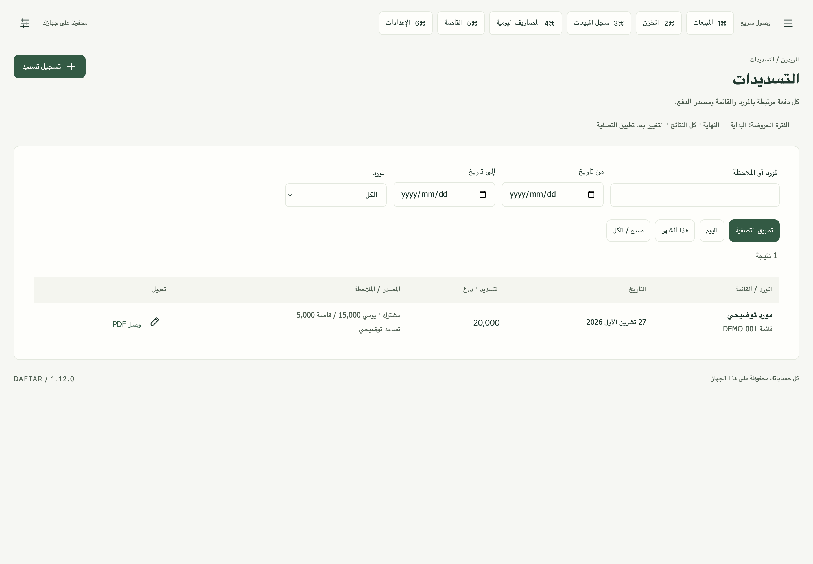

Phase 08 — Purchase invoices, analysis and supplier payments
Status: planned, not implemented. Date: 2026-10-27. Depends on: 02, 06, 07.
Outcome: Invoices, quantity/price analysis and partial/full settlement work together, including atomic invoice-with-payment.
Includes former phase(s): 13, 14. Merge rationale and old-to-new map.
Master plan · Screenshot gallery · Design contract · Accounting contract
Execution rules: AGENTS.md · scope index: PLANS.md · authoritative status/evidence: PHASES.md. This published scope file does not establish phase completion.
Work to deliver
Purchase invoices and purchase analysis
Supplier payments and allocation
Acceptance for this feature
- Run this phase’s behavior tests with isolated synthetic records; save command/result evidence.
- Capture the implemented Flutter screen and dialogs on macOS, Android and iPhone; compare the same state and logical size against the references below.
- Verify empty, populated, invalid, loading, failed-save and retry/cancel states where applicable; test restart persistence for every changed record.
- Review with the owner at this phase. Preserve the current design unless an explicit change is recorded; an undecided edit does not authorize a redesign.
- Update feature coverage, decisions and the project log; synchronize project documentation and verify no pending/failed memory work.
- Satisfy the adopted workflow: dedicated phase branch/worktree and PR, applicable Figma validation and user design approval (or Design: N/A), read-only planning, meaningful tests before behavior changes, independent review/re-verification and required CI/benchmark evidence.
- Record user approval, merged PR and applicable release/rollback validation in PHASES.md before marking DONE. Never merge without user approval or automatically start the next phase.
Screenshot references
These are current Electron screenshots with synthetic data, except the explicitly labelled design board and report HTML. They specify composition and current behavior; they do not prove a Flutter implementation. Phone captures are narrow current-UI references, not native Android/iPhone captures. See the capture contract before comparing pixels.


Handoff for implementation
Read AGENTS.md, PLANS.md, PHASES.md, the master plan, this phase, its screenshot set and source evidence. Implement phase 08 only when the owner has started it and its dependencies are complete. First report source/reference mismatches, establish dedicated Git isolation and apply the design/approval gate where relevant. The Lead coordinates a read-only Planner, appropriate UX/Workers and an independent Reviewer. Preserve the current design and scope. End with working results, actual tests/captures, review and PR evidence in PHASES.md. Do not mark DONE before approved merge and applicable release validation; do not automatically start the next phase.